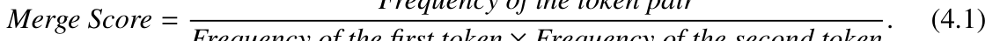
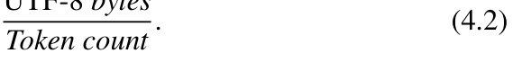

Chapter 4 · Data Preparation第 4 章 · 数据准备
这一章的数学密度是全书最低的，但里面出现的每一个量都是工程上真正会被卡预算的统计量：分词器决定了你一次能塞进上下文多少内容，质量过滤决定了你烧掉的算力有多少是白烧的。全章只有 2 条编号公式——(4.1) WordPiece 的合并分数，(4.2) 压缩率；但正文里还散落着几段真正有数学含量的行内公式：去重用的 Jaccard 相似度、Unigram 语言模型的负对数似然损失、BPE 的贪心合并准则、质量过滤用的困惑度。本页把这两条编号公式和这四段行内公式一起推导完。
原书位置第 4 章 4.3.2 WordPiece Tokenization / 4.3.4 Choice of Tokenizer
本页公式一览
| 编号 | 一句话 | 核心数学工具 |
|---|---|---|
| 4.1 | WordPiece 合并分数：合并哪个 token 对 | 极大似然 → 逐点互信息 PMI |
| 4.2 | 压缩率：每个 token 平均装多少字节 | 样本均值 / 计数比 |
| 行内 | Jaccard 相似度（句级去重） | 集合运算 + MinHash 无偏估计 |
| 行内 | Unigram 语言模型的负对数似然损失 | 极大似然估计、EM、Viterbi |
| 行内 | BPE 的贪心合并准则 | 贪心 / 逐次最优 |
| 行内 | 困惑度（Perplexity）作为质量指标 | 交叉熵的指数化 = 有效分支数 |
| — | 为什么压缩率是硬约束（4.2 的数字验算） | 量纲分析 + 算力账单 |
(4.1)WordPiece 合并分数（Merge Score）#
出处第 4 章 4.3.2 节 WordPiece Tokenization 对照原文

原书公式 4.1① 公式
原书分子写作 "Frequency of the token pair"，分母写作 "Frequency of the first token × Frequency of the second token"。用概率写就是
② 符号
| 符号 | 含义 | 形状 / 量纲 |
|---|---|---|
| \(a,b\) | 两个相邻的 token（字符串） | 离散符号 |
| \(f(a)\) | token \(a\) 在训练语料中出现的总次数 | 标量计数，有量纲"次" |
| \(f(ab)\) | \(a\) 紧跟在 \(b\) 前面（bigram）出现的次数 | 标量计数 |
| \(\mathrm{MergeScore}\) | 合并 \(a,b\) 的"收益率" | \(1/\text{次}\)，只比大小不看绝对值 |
| \(\mathrm{PMI}(a,b)\) | 逐点互信息 \(\ln\frac{P(ab)}{P(a)P(b)}\) | nat，无量纲 |
算法流程：把候选对按 \(\mathrm{MergeScore}\) 排序，取最大的那一对合并进词表，更新所有 \(f(\cdot)\)，重复直到词表达到目标大小。
③ 推导
要看懂这条公式，关键是意识到它不是启发式，而是"如果我只能加一个 token 进词表，应该加哪个"的贪心最优解。我们从头推。
- 建立 unigram 语言模型。假设 token 之间相互独立（unigram 假设），语料总 token 数为 \(N\)，则 \(P(a)=f(a)/N\)。整段语料的似然是各 token 概率之积： \(\mathcal{L}=\prod_{i=1}^{N}P(x_i)\)。
- 取对数把乘积变求和（这是 MLE 的标准第一步）。 \[\ln\mathcal{L}=\sum_{i=1}^{N}\ln P(x_i).\] 乘法变加法是必须的：\(N\) 通常上百万，连乘会下溢；更重要的是，加法形式才好做"增量更新"。
- 现在问：加一个新 token \(w=ab\) 进词表，总似然能提高多少？ 在原来只有 unigram 的切分下，位置 \(i\) 上的 \(a,b\) 贡献是 \(\ln P(a)+\ln P(b)\)。合并后该位置贡献 \(\ln P(ab)\)。增益 \[\Delta\ln\mathcal{L}=\ln P(ab)-\ln P(a)-\ln P(b).\] 这正是 \(\ln\) 的对数运算法则 \(\ln(xy)=\ln x+\ln y\) 直接给出的。
- 消掉语料规模 \(N\)。代入频次： \[\Delta\ln\mathcal{L}=\ln\frac{f(ab)}{N}-\ln\frac{f(a)}{N}-\ln\frac{f(b)}{N}=\ln\frac{f(ab)}{f(a)f(b)}.\] 中间的两个 \(N\) 恰好约掉（分母多出一个 \(N\)，分子被除以一次）。所以增益是一个与语料规模无关的量——换 10 倍数据，合并优先级不变。这很关键，否则每来一批数据整个词表学习都要重排。
- 指数化就得到 (4.1)。算法只需要比较大小，而 \(\ln\) 严格单调，所以 \(\arg\max\Delta\ln\mathcal{L}=\arg\max\mathrm{MergeScore}\)。取指数（把对数增益还原成"概率比"）就得到 \(\mathrm{MergeScore}=f(ab)/(f(a)f(b))\)。严格说这步是可选的——直接用 \(\Delta\ln\mathcal{L}\) 排序结果完全一样，指数形式只是更符合"分数"的直觉。
- 认出这个量。把 \(\frac{P(ab)}{P(a)P(b)}\) 称为点互信息（Pointwise Mutual Information, PMI）的指数形式：\(\mathrm{PMI}(a,b)=\ln\frac{P(ab)}{P(a)P(b)}\)。PMI 度量两个符号的"共现比随机独立假设超出了多少"。
- 分母是"各自的频次"，不是"各自频次的和"。写成 \(f(ab)/(f(a)+f(b))\) 就变成了另一个准则（部分实现确实这么写，两者排序结果接近但不相同）。原书图 4.1 明确是乘。
- 分母里的 \(f(a),f(b)\) 是"作为独立 token 的频次"，不是"该二元组内各位置的频次"。实现时统计的是全局 unigram 计数表。
- 这是贪心，不是全局最优。每步只挑当前最大的分数，合并后的新计数会改变后续所有排名。贪心只在"每步选最好的"意义下最优，不保证最终似然最大——这跟 Huffman 编码同病（不过 BPE 本来就是 1994 年的压缩算法，贪心在这里有历史渊源）。
- 分数量纲是 \(1/\text{次}\)，绝对值没有意义，只能比大小；跨不同语料规模的两次训练，分数不可直接比较。
(4.2)压缩率（Compression Rate）#
出处第 4 章 4.3.4 节 Choice of Tokenizer 对照原文

原书公式 4.2① 公式
原书括注它就是 the average number of bytes per token（每个 token 平均多少字节）。
② 符号
| 符号 | 含义 | 形状 / 量纲 |
|---|---|---|
| \(B\) | 原始文本的 UTF-8 编码字节数 | 标量，byte |
| \(T\) | 分词后 token 的个数 | 标量，个 |
| \(\mathrm{CompressionRate}\) | \(B/T\) | 标量，byte/token |
| \(\rho\) | 语料上的平均压缩率（对所有文档加权求平均） | byte/token |
注意 UTF-8 是变长编码：ASCII 1 字节，Latin-1 补充字符 2 字节，CJK 与 emoji 3 字节。所以 \(B\) 是语言相关的量，中文语料的 \(B/T\) 天生比英文大。
③ 推导
这条式子简单到不像"推导"，但它有一个必须讲清楚的点：\(B/T\) 是样本均值，而"压缩率"这个词其实用错了方向。
- 把每个 token 展开成字节序列。设第 \(i\) 个 token \(v_i\) 的 UTF-8 字节长度为 \(b_i\)。分词是无损的（4.3.4 节第一条要求：tokenize 结果能精确还原原文），所以 \[ B=\sum_{i=1}^{T}b_i. \] 这一步就是"无损可重建"这条要求的数学表述：\(B\) 可加。
- 代入 (4.2)，化成分子分母同分母。 \[\mathrm{CompressionRate}=\frac{\sum_{i=1}^{T}b_i}{T}=\frac{1}{T}\sum_{i=1}^{T}b_i.\] 右端就是 \(b_1,\dots,b_T\) 的算术平均（arithmetic mean）。所以"平均每 token 多少字节"这句话是字面意义上精确的，不是近似。
- 确认这是个有界量。由于 \(b_i\in\{1,2,3,\dots\}\) 且 \(\max_i b_i\le b_{\max}\)（\(b_{\max}\) 是词表中最长 token 的字节数，byte-level BPE 下不超过词表最大长度）， \[1\;\le\;\rho\;\le\;b_{\max}.\] 下界 1 对应"所有 token 都是单字节"，即退化成 byte 级；上界由词表里最长 token 决定。这给了 \(\rho\) 一个物理意义：词表里那些超长的"整词"token 越多，\(\rho\) 越大。
- 反解出训练/推理时真正关心的量。 \[ T=\frac{B}{\rho}. \] 给定语料的字节数 \(B\) 是固定的（钱已经花在爬取和存储上了），所以\(\rho\) 直接、线性地决定序列长度 \(T\)，而 Transformer 的算力 \(\mathrm{FLOPs}\approx 6ND\) 与 \(D=T\) 线性相关。结论： \[\mathrm{FLOPs}\;\propto\;\frac{1}{\rho}.\] 压缩率翻倍，等价于把训练/推理账单减半。
- \(\rho\) 不是"熵编码的压缩比"。真正的无损压缩比可以趋近 \(H(\text{bytes})/\ln 256\)，而 \(\rho\) 只是分词器固定的桶大小指标，和信息论里的压缩率毫无关系。这个词在原书里是工程俗语。
- 跨 tokenizer 不可比。换 tokenizer 就换了桶大小，\(\rho\) 整体平移。一个 \(\rho=4\) 的 byte-level BPE 和一个 \(\rho=4\) 的 Unigram，序列长度不可比。
- 语料混语种时 \(\rho\) 是加权平均。把中文文档和英文文档拼起来算总 \(B/T\)，等于按字节数加权平均，会掩盖"中文上分词器不合身"这一事实。工程上应当按语种/按领域分别统计 \(\rho\)。
以下是本章出现过的行内公式（无编号）
第 4 章的正文里还嵌着四段没有编号、但数学含量不低的式子。它们分散在 4.2.1、4.2.3、4.3.1、4.3.3 节的文字和代码注释里，原书只是用 → 指代，没有给编号。下面逐个补齐推导。
行内公式 A · n-gram 的 Jaccard 相似度（句级去重）#
出处第 4 章 4.2.3 节 Data Deduplication 对照原文
① 公式
用在一段文本里：把第 \(k\) 行和第 \(k+1\) 行各切成 n-gram 集合 \(A,B\)，若 \(J(A,B)>\tau\)（预设阈值），只保留一行。
② 符号
| 符号 | 含义 | 形状 / 量纲 |
|---|---|---|
| \(A,B\) | 两行文本的 n-gram 集合（集合，不是多重集） | \(\mathcal{P}(\Sigma)\) 的子集 |
| \(|A|\) | \(A\) 中不同 n-gram 的个数 | 非负整数 |
| \(J(A,B)\) | Jaccard 相似度 | 标量，\([0,1]\) |
| \(\tau\) | 去重阈值 | 标量，\([0,1]\)，经验值 |
| \(k\) | MinHash 的哈希函数个数 | 正整数 |
③ 推导
- 为什么不用编辑距离而用集合相似度。模板式网页（同一套导航、页脚、推荐位）改几个字，编辑距离就爆表，但共享的 n-gram 几乎一样。集合的交并比恰好对"局部增删"免疫——删掉一个元素，\(|A\cap B|\) 和 \(|A\cup B|\) 同时减 1，比值平滑下降；编辑距离则直接跳变。
- 容斥原理给出第二个等号。\(|A\cup B|=|A|+|B|-|A\cap B|\)（先加总，再把重复计数的交集减回去）。代回即得。分母用并集而非交集，是为了保证当两集合完全不同时 \(J=0\)、完全相同时 \(J=1\) 且对称。
- 它是余弦相似度在 0/1 特征向量上的特例。取指示向量 \(\mathbf{1}_A,\mathbf{1}_B\in\{0,1\}^{|\Sigma|}\)，则 \(\langle\mathbf{1}_A,\mathbf{1}_B\rangle=|A\cap B|\)，\(\|\mathbf{1}_A\|^2=|A|\)，所以 \[J=\frac{\langle\mathbf{1}_A,\mathbf{1}_B\rangle}{\|\mathbf{1}_A\|\,\|\mathbf{1}_B\|}.\] 而对非负向量，余弦相似度 \(\in[0,1]\)，因此 Jaccard 也 \(\in[0,1]\) 且对称。这一步解释了为什么 Jaccard 是"集合版余弦"。
- 精确算法。直接算交集需要 \(O(\min(|A|,|B|))\) 次哈希查找。原书代码正是这么做的（
len(ngrams_last.intersection(ngrams_cur))）。但对语料级去重（文档两两比较是 \(O(N^2)\)）必须换算法。 - MinHash：把 \(J\) 换成"签名里相等的比例"。取 \(k\) 个随机哈希函数 \(h_1,\dots,h_k\)，令 \(g(A)=(\min_{a\in A}h_1(a),\dots,\min_{a\in A}h_k(a))\)。则 \[\Pr\bigl[g_i(A)=g_i(B)\bigr]=J(A,B).\] 直观理由：把 \(A\cup B\) 的元素按 \(h_i\) 值排序，\(h_i\) 的最小值落在 \(A\) 里、还是落在 \(A\setminus B\) 里，概率之比恰是 \(|A| : |A\setminus B|\)；事件"最小值同时是两个集合的最小值"⟺"最小值落在交集里"，其概率即 \(|A\cap B|/|A\cup B|\)。
- 于是估计量是无偏的。\(\widehat J=\frac1k\sum_i \mathbb{1}[g_i(A)=g_i(B)]\)，故 \(\mathbb{E}[\widehat J]=J\)，且 \[\Pr\bigl[\widehat J\neq J\bigr]=(1-J)^{k},\qquad k\approx\frac{1}{1-J}\ln\frac{1}{\delta}.\] 取 \(\delta=0.1,\;J=0.8\) 得 \(k\approx21\)。关键性质：\(J\) 越接近 1（越相似），需要的 \(k\) 越大——因为要分辨"很像"就必须采更多次。
- 加上分带（banding）变成 LSH。把签名分成 \(b\) 个 band、每 band 有 \(r\) 行（\(b=kr\)）。只要任意一个 band 内完全相同就判为候选重复。相似度 \(J\) 下候选对被召回的概率 \[\Pr[\text{候选}]=1-(1-J^{r})^{b}.\] 这就是 MinHashLSH：一个把"连续相似度阈值"变成"高效候选桶"的概率构造——比在 \(N^2\) 个文档对上逐个算 Jaccard 快几个数量级。
- 代码里
set(...)是关键，不可省略。Jaccard 定义在集合上；若误用多重集（保留重复次数），\(|A\cap B|\) 会被高频 n-gram 主导，"这条句子把 the 重复了 30 次"就会让两行被误判为高度相似。原书代码显式写了set(last["ngrams"])。 - n 太小则噪声大，太大则漏检。\(n=1\) 时公共停用词（"the"、"of"）会把任意两行都推高相似度；\(n\) 太大时只有整句重复才能检出，轻微改写就漏掉。原书用
min(len(grams), n)兜住短句。 - \(\tau\) 是超参，没有推导。它是经验值，必须在自己的语料上标定：先采样人工标出重复对，再画 \(J\) 的直方图，取双峰之间的谷底。
行内公式 B · Unigram 语言模型的负对数似然损失#
出处第 4 章 4.3.3 节 Unigram Tokenization 对照原文
① 公式
设训练语料切成句子 \(x^{(1)},\dots,x^{(N)}\)，词表（初始候选 token 集）为 \(V\)，unigram 参数为 \(\theta_v=P(v)\)。原书说的"likelihood score of the training corpus"就是
相应的损失（要极小化的目标）
而"删掉某个 token 造成的似然下降"（即原书的选择准则）是
（最后一式在最优性条件 \(\theta^\star_v=c_v/C\) 下成立，见第 4 步。）
② 符号
| 符号 | 含义 | 形状 / 量纲 |
|---|---|---|
| \(V\) | 候选词表（初始很大，逐步删） | 有限集合，\(|V|\sim10^5\) |
| \(\theta_v\) | token \(v\) 的一元概率 \(P(v)\) | 标量，\((0,1]\) |
| \(x^{(j)}_i\) | 第 \(j\) 句第 \(i\) 个 token | \(V\) 的元素 |
| \(T_j\) | 第 \(j\) 句的 token 数 | 正整数 |
| \(c_v\) | token \(v\) 在语料中的总出现次数 | 整数计数 |
| \(C\) | 语料 token 总数 \(=\sum_v c_v\) | 整数计数 |
| \(\Delta(v)\) | 删掉 \(v\) 的代价（越大越该被删） | nat（\(C\) 为常数时） |
③ 推导
- unigram 假设把联合概率分解成边缘概率之积。这是全章最重的一个简化假设。严格地说，真实文本 \(P(x_1,\dots,x_T)\ne\prod_i P(x_i)\)——"the cat sat" 与 "sat cat the" 概率天差地别，而 unigram 模型给它们完全相同的概率。Unigram 分词之所以够用，是因为它只需要知道"哪些 token 片段常见"，不需要建模顺序；真正的序列建模由后面的 Transformer 承担。
- 取对数。同 (4.1) 的理由：\(\prod\) 变 \(\sum\)，且对数似然是似然的单调变换\(\Rightarrow\) 极大化对数似然 ⟺ 极大化似然，最优解不变（argmax 保持，但最优值本身会变，比较不同模型的 likelihood 时必须统一说"是对数似然"）。
- 交换求和顺序，暴露充分统计量。双层求和里 \(x^{(j)}_i\) 逐个取遍所有出现过的 token，于是 \[\mathcal{U}(\theta)=-\sum_{v\in V}c_v\ln\theta_v.\] 整个语料塌缩成 \(|V|\) 个计数 \(c_v\)。这是一个多项式分布的对数似然，属于指数族，所以有闭式最优解。
- M 步：拉格朗日乘子法解约束最优化。目标 \(\min_\theta \sum_v c_v(-\ln\theta_v)\)，约束 \(g(\theta)=\sum_v\theta_v-1=0\)。用 \(J(\theta,\lambda)=\sum_v c_v(-\ln\theta_v)+\lambda(\sum_v\theta_v-1)\)。 一阶条件（对每个 \(v\) 分别求偏导置零）：\(\displaystyle\frac{\partial J}{\partial\theta_v}=-\frac{c_v}{\theta_v}+\lambda=0\Rightarrow\theta_v=\frac{c_v}{\lambda}\)。 代入约束：\(\sum_v\frac{c_v}{\lambda}=1\Rightarrow\frac{C}{\lambda}=1\Rightarrow\lambda=C\)。故 \[\theta^\star_v=\frac{c_v}{C}.\] 一阶条件满足极小（\(\mathcal{U}\) 在单纯形上严格凸，\(\ln\) 严格凹 ⟹ 唯一全局最优），无需二阶条件。
- E 步其实被"切分"这一步吃掉了。标准 EM 需要隐变量（每个位置的真实切分）。但这里的隐变量可以直接求：给定 \(\theta\)，一个句子的最优切分就是最大对数似然那个，可以写成 DP \[\mathrm{DP}[i]=\max_{k}\bigl\{\mathrm{DP}[i-k]+\ln\theta_{x_{i-k+1}\cdots x_i}\bigr\}\] ——这就是原书说的 Viterbi Algorithm，\(O(T\cdot|V|)\) 求出最优切分。把它当隐变量的 MAP 估计代回第 3 步重新统计 \(c_v\)，就完成了 Unigram 的一次 EM 迭代（SentencePiece 的做法正是如此，而不做 E 步、直接用当前切分计数也是常见简化）。
- 由此得到删除准则 \(\Delta(v)\)。删掉 \(v\) 的后果分两部分：(a) 凡是出现 \(v\) 的位置必须改用 \(V\setminus\{v\}\) 里的次优切分；(b) 即使最优切分不变，\(v\) 从词表消失后其 token 计数要分摊给其他 token。在第 4 步的最优性条件下 \(\theta^\star=c/C\)，logit 差被消掉，得到干净的闭式： \[\mathcal{U}(\theta^\star)-\mathcal{U}(\theta^{\star\setminus v})\Big|_{\text{固定最优切分}}=c_v\ln\frac{c_v}{c_v/C}=c_v\ln C-c_v\ln c_v.\] 注意 \(\ln C\) 对所有 \(v\) 相同，所以比较不同 \(v\) 时它被减掉，真正起判别作用的是 \(-c_v\ln c_v\)：\(\Delta(v)\) 大 ⟺ \(v\) 的计数 \(c_v\) 大。也就是说，"删掉之后损失最大"的 token 恰是最高频的那些——先把它们一个个剔出去，词表就逐步收缩到目标大小。
- unigram 假设不是"单词之间无关"这么随便的说法。它是"在一个固定的、不依赖上下文的切分下，token 之间独立"。而这个切分本身是最大似然选出来的，两者互相依赖——这正是需要 EM/Viterbi 的原因，不能一步到位。
- \(\mathcal{L}\) 与 \(\ln\mathcal{L}\) 不可跨语料比较。句子越长对数似然越大；要比模型好坏必须先按 token 数归一化（即每 token 的平均负对数似然，这正是 困惑度）。
- \(c_v\) 必须按"出现次数"统计，不能按"出现的句子数"，否则上面的拉格朗日推导不成立（那时目标函数不再是多项式对数似然）。
- 删除准则必须重算切分才有意义。上面第 6 步的闭式是在"固定最优切分"下得到的近似；严格实现（如 SentencePiece）会实际删掉 \(v\) 后重跑 Viterbi，再算真实损失差。
行内公式 C · BPE 的贪心合并准则#
出处第 4 章 4.3.1 节 BPE Tokenization 对照原文
① 公式
重复执行：合并 \((a^\star,b^\star)\to w\)，把语料中所有 \(ab\) 替换为 \(w\)，更新频次表，直到 \(|V|=|V_0|+K\)（\(K\) = 合并次数，GPT-2 取 \(K=50000\)，故词表 \(50257=256+1+50000\)）。
② 符号
| 符号 | 含义 | 形状 / 量纲 |
|---|---|---|
| \(P\) | 当前语料中所有相邻 bigram 对的集合 | \(\subseteq V\times V\) |
| \(f(ab)\) | bigram \(ab\) 在语料中的共现次数 | 整数计数 |
| \(\sigma_t(x)\) | 第 \(t\) 轮合并后的切分 | \(\Sigma^\ast\) 中的字符串 |
| \(\ell(\sigma)\) | 切分占用的 token 数 \(=|\sigma|\) | 正整数，要极小化的目标 |
③ 推导
要说明的是：这条准则不是"选出最该合并的对"，而是对某个真实目标的单步精确贪心近似。把它推清楚需要一点交换论证。
- 先写下真正的优化问题。给定初始符号集与合并次数 \(K\)，选一组合并操作，使最终编码长度最短： \[\ell^\star=\min_{\mathcal{S}}\;\frac{1}{N}\sum_{j=1}^{N}\ell\bigl(\sigma_{\mathcal{S}}(x^{(j)})\bigr).\] 这正是数据压缩里的"统计压缩"问题：BPE 1994 年就是为这个设计的（参考 4.3.1 节引用的 [128][129]）。
- 每做一次合并，\(\ell\) 恰好减少 \(f(ab)\)。一次合并把每一处 \(ab\) 变成一个 token \(w\)。语料里 \(ab\) 出现 \(f(ab)\) 次，每次替换使该位置的 token 数从 2 减到 1，即减少 1 个 token。线性性： \[\Delta\ell=-\sum_{\text{occurrences}}1=-f(ab).\] 所以 \(\arg\max f(ab)\) 就是当前这一步让长度下降最多的选择。
- 为什么这一步"近似"而不是"精确"最优？因为贪心只看当前收益，而一次合并会改变后续所有 \(f(\cdot)\)。合并 \(ab\to w\) 之后，任何原本与 \(a\) 或 \(b\) 相邻的 bigram 都会被作废（文本里已经没有独立的 \(a\) 和 \(b\) 了），它们的计数被清零；同时会产生新的候选对 \((x,a),(b,y)\)。所以 \(\max f\) 是一个贪心（greedy）策略——和 Huffman 编码同源：Huffman 可以证明贪心在"只在叶子上合并"这类结构上最优，而一般情形不保证。
- 单调性保证算法不会卡死。合并只会减少候选对集合 \(P\)（作废的比新增的多：新对 \((x,a)\)、\((b,y)\) 至少各含一个已被吸收进 \(w\) 的符号）。因此每轮 \(\max_{(a,b)\in P}f(ab)\) 的候选集严格变小，循环一定在 \(K\) 轮内终止，不会出现"找不到可合并的对却还要继续"的死循环。
- 与 (4.1) 的对比给出全章最实用的一条结论。BPE 的 \(f(ab)\) 与 WordPiece 的 \(f(ab)/(f(a)f(b))\) 只差一个分母。要理解分母买到了什么，把它读成"这次合并让语料长度下降 多少" vs "相对这次合并的机会成本"：合并 \((t,h)\) 会作废 \(t\) 和 \(h\) 的所有其它上下文，代价约与 \(f(t)+f(h)\) 成正比。所以除以 \(f(a)f(b)\) 是在做一种近似的"单位收益 / 单位代价"归一化，让决策偏向"这两个 token 几乎只跟彼此搭配"（如 `tion`、`##ing`）而不是"这两个 token 到处都是"（如 `th`）。
- byte-level BPE（B-BPE）的基词表是 256 个字节，不是字符。这样任何 UTF-8 文本都能无损编码，彻底消灭 OOV。相应地，词表里混有大量看起来"乱码"的字节级 token，这是正常的。
- \(K\) 是超参，不是推导结果。GPT-2 的 50000、常见的 32000/128000 都是工程选择（受限于嵌入矩阵大小必须是 \(|V|\) 的整数倍）。更大的 \(K\) → \(\rho\) 更大 → 序列更短，但嵌入参数 \(\propto |V|d\) 也更大。
- 贪心不保证全局最优（第 3 步）。论文里报 BPE 压缩率时不必把它当作最优编码长度。
行内公式 D · 困惑度（Perplexity）与质量过滤阈值#
出处第 4 章 4.2.1 节 Quality Filtering 对照原文
① 公式
用第五章的记号，\(\mathcal{H}(p,q)=H(p)+\mathrm{KL}(p\|q)\)，于是
② 符号
| 符号 | 含义 | 形状 / 量纲 |
|---|---|---|
| \(p_\theta(x_i\mid x_{<i})\) | 模型在给定前文下赋予 \(x_i\) 的概率 | 标量，\((0,1]\) |
| \(T\) | 样本 token 数（必须除以它） | 正整数 |
| \(\mathcal{H}(p_{\text{data}},p_\theta)\) | 平均交叉熵（每 token，nat） | 标量，\(>0\) |
| \(\mathrm{PPL}\) | 困惑度 | 无量纲，\([1,\infty)\) |
| \(\tau_{\mathrm{ppl}}\) | 过滤阈值：PPL 超过它就丢弃 | 标量，经验值 |
③ 推导
- 从似然出发。自回归模型对整段文本的似然是 \(\prod_{i=1}^{T}p_\theta(x_i\mid x_{<i})\)，取负对数再除以 \(T\) 得到每 token 平均负对数似然： \[\ell=\frac{1}{T}\sum_{i=1}^{T}-\ln p_\theta(x_i\mid x_{<i}).\] 除以 \(T\) 是必需的（不然长文档的 loss 天然更大，没法用统一阈值），这一步把"整段似然"变成"平均每步的意外程度"，也正是Unigram 损失归一化后的形状。
- 指数化。\(\mathrm{PPL}=e^{\ell}\)。指数把"平均对数损失"翻译回"概率的尺度"，因为由对数运算法则， \[e^{-\frac1T\sum_i \ln p_i}=\Bigl(\prod_{i=1}^{T}p_i\Bigr)^{1/T}=\text{几何平均概率}.\] 所以 PPL 就是模型每步平均赋予词的概率的几何平均的倒数。
- 因式分解暴露两层含义。把 \(\ell\) 识别为交叉熵，代入第二章的恒等式 \(\mathcal{H}(p,q)=H(p)+\mathrm{KL}(p\|q)\)，得 \[\mathrm{PPL}=e^{H(p)}\cdot e^{\mathrm{KL}(p\|q)}.\] 第一项 \(e^{H(p)}\) 是纯数据属性：代码、数学公式的熵远低于自然语言散文，所以它们的 PPL 天生就低，混在一起设一个全局阈值必然误伤。第二项 \(e^{\mathrm{KL}}\) 是模型的错。
- "有效分支数"读法。若模型在每个位置上的预测近似均匀分布在 \(k\) 个候选上，则 \(p\approx 1/k\)，交叉熵 \(=\ln k\)，于是 \[\mathrm{PPL}\approx k.\] PPL 就是"模型在每一步等效地在多少个选项间犹豫"。PPL=100 大约意味着"每步在 100 个词里挑一个"。
- 为什么这个量能当质量过滤器。对一段机器生成的模板文本（导航栏、"请登录以继续"、乱码 HTML 残留），模型非常确定——每个 token 的 \(p\) 接近 1，于是 \(\ln p\approx0\)、\(\ell\approx0\)、\(\mathrm{PPL}\approx1\)，逼近公式的下界。因此"困惑度低到不像人话"是模板文本的典型指纹。反过来，一段随机乱码会让每个 \(p\) 都很小，PPL 飙到成千上万，远超自然语言上界。真实人写文本的 PPL 落在一个相对窄的带里（英文散文大致 \(10\sim60\) 的量级，随 tokenizer 变化很大）。于是设阈值 \(\tau_{\mathrm{ppl}}\) 做单侧截断就是一个几乎零成本的分类器。
- 与 4.2.1 节其它启发式规则的分工。原书列的规则——重复词超过 100 次、符号/词比 \(>0.1\)、点赞数 \(<3\)、fastText 语言分类器——都是判别式的（人工设定的确定性阈值）；PPL 是生成式模型给出的似然。两者互补：规则抓表面特征，PPL 抓"读起来不像人写的"。
- \(\tau_{\mathrm{ppl}}\) 完全是经验值，换 tokenizer 就作废。PPL 依赖词表大小和切分粒度：字节级 BPE 的 PPL 天生比 Unigram 大好几倍，因为每个 token 平均只装 5 字节（见 公式 4.2）。拿 GPT-2 标定的阈值去卡 LLaMA tokenizer 上的 PPL 会全盘失效。而且过滤器和 tokenizer 的训练顺序还有耦合：一般先训 tokenizer，再用它算 PPL。
- 必须用 pre-trained 模型算，不能用随机或预训练中的模型。用训练中的 checkpoint 做过滤 = 用模型当前的偏见筛数据，会形成自我强化的反馈回路（模型不看好的写法被删掉，于是模型更不会产出它）。原书用的是现成的语言模型。
- PPL 不能跨文档比较绝对值大小来判"优劣"，只能在同分布内比。从上面的因式分解看，\(e^{H(p)}\) 这一项就是分布差异的来源。
- PPL 与 压缩率 是两个独立的轴。高 \(\rho\) 的词表可能让所有文本的 PPL 都变高（token 更大块，条件更难），二者不要一起当调参目标。
补充 · 为什么"压缩率"是选 tokenizer 的硬约束#
出处第 4 章 4.3.4 节 Choice of Tokenizer 对照原文
4.3.4 节给了两个要求：(i) 无损可重建，(ii) 高压缩率。第一条用 byte-level BPE 可以机械地保证（256 个字节覆盖全部 UTF-8），第二条才是真正需要拿数字讲清楚的。下面把原书的算例完整验算一遍，再把它翻译成钱。
① 原书算例的逐步验算
- 核对分子。原书写 "1 MB = 1,048,576 bytes"。注意这是 MiB（\(2^{20}\)）而不是 MB（\(10^6\)）：\(1\times1024^2=1\,048\,576\)。原书括号里给的数是对的，但正文写 "1 MB" 属于口语化，严格说是 1 MiB。
- 除法。\(200\,000\times5=1\,000\,000\)，余 \(48\,576\)；\(48\,576/200\,000=0.24288\)。故 \(\rho=5.24288\)，保留两位小数 \(5.24\)——原书无误。
- 反过来读这个数：每个 token 约 5.24 字节。这意味着平均一个 token 对应约 5 个英文字母（UTF-8 里 ASCII 占 1 字节），或者约 1.7 个常用汉字（3 字节）。如果换成中文语料而词表没重新训过，平均每 token 字节数会明显下降——正好解释了 4.3.4 节说的"英语 BPE tokenizer 处理非英语数据效果差、推理延迟变高"：汉字被切成一串 1~2 字节的碎片，token 数暴涨。
- 压缩率翻倍的收益。同一份字节数 \(B\) 的语料，\(\rho:5.24\to10.48\) 意味着 \(T:B/\rho\) 直接减半：\(200\,000\to100\,000\) 个 token。
② 把它翻译成训练账单
- 算力对序列长度线性。Transformer 的前向-反向算力近似 \(\mathrm{FLOPs}\approx6ND\)（\(N\) 参数量、\(D\) token 数；含 attention 项则还要加上与 \(T_{\text{seq}}\) 相关的部分）。固定 \(N\) 时，\(D\) 减半 ⟹ 总 FLOPs 减半。
- 于是有直接的正比关系。 \[\mathrm{Cost}\;\propto\;\mathrm{FLOPs}\;\propto\;D=\frac{B}{\rho}.\] 压缩率 \(\rho\) 与成本成反比。这是 4.3.4 节那句 "to enable more efficient text encoding" 的全部含义。
- 推理侧还要乘一层。自回归解码时，每生成一个 token 都要跑一次全模型前向，且要重算整个 KV cache。生成 \(n\) 个 token 的延迟 \(\approx n\times(\text{单步前向})\)，而单步前向随序列变长。所以序列长度减半，延迟和 KV 显存都明显下降——这就是 4.3.4 节"inference latency 增加"的来源。
- 注意力是二次的，收益更大。若算力里包含 \(\mathrm{FLOPs}_{\text{attn}}\propto L\cdot T_{\text{seq}}\)，序列变短还会额外降低注意力的开销。代价是 \(\rho\) 大意味着词表大、嵌入层参数多：\(\text{EmbedParams}=|V|d\)，GPT-2 的 \(50257\times768\approx3.86\times10^7\) 就是为此付出的。这就是"压缩率 vs 词表大小"的真实权衡，而不是"越大越好"。
③ 所以工程上要同时盯这几个数
| 指标 | 定义 | 为什么要看 |
|---|---|---|
| 压缩率 \(\rho\) | \(B/T\)，byte/token | 直接决定序列长度与账单，见上 |
| \(|V|\) | 词表大小 | \(\rho\) 越大通常 \(|V|\) 越大，嵌入层参数 \(\propto|V|d\) |
| 分语言/分领域的 \(\rho\) | 分语料统计的 \(B/T\) | 总体 \(\rho\) 会掩盖"某语种上词表不合身"，见 (4.2) 易错点 |
| 数字串切分一致性 | 同一串数字是否总切成同一组 token | 4.3.4 节末提到：切分不一致会损害数学推理能力 |
| 无损重建率 | 能否 decode 回原文 | 4.3.4 节第一条硬要求；byte-level BPE 机械保证 |
12|34、在另一处切成 1|2|3|4，同一串数字就有多种表示，模型必须先"猜"该怎么切才能做对，而这件事本身需要它已经理解数字——鸡生蛋问题。解法是加一条数据无关的确定性预切分规则（把长数字串按固定位数切开，如 GPT-4 的三位一组），使数字段的切分与上下文无关。这说明 tokenizer 的设计空间里有一部分是纯工程约束，而不只是"压缩率高就行"。- 不要用 \(\rho\) 单指标选 tokenizer。压缩率高的词表可能对数学、代码、特定语言明显不合身，反而拉低下游能力——原书 4.4 节讲的 data mix 与 tokenizer 效果是耦合的。
- 改变 tokenizer 必须同时调整序列长度超参 \(T\)。词表/分词粒度一变，最优 batch size 和 block size 的最优值就变了，直接沿用旧配置会浪费算力。
- 持续预训练（continual pre-training）时改 tokenizer 要付出对齐代价：新旧 embedding 不在同一空间，通常需要重新训练或做词表映射。4.3.4 节说"要注意原 tokenizer 对新数据的适应性"，实践上更常见的做法是不动 tokenizer，而是用旧 tokenizer 把新数据切进去（LLaMA 至今如此），代价就是接受更低的 \(\rho\)。